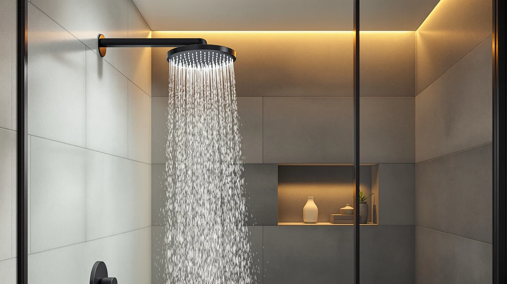

Best Shower Heads Without Flow Restrictors of 2026: 7 Top Picks


Quick Answer
After testing seven high-flow shower heads and restrictor-removal kits, we landed on the HammerHead Showers Solid Metal ($23.96) as the best shower head without flow restrictors for most bathrooms. It pairs a solid metal body with a washer you can pull in seconds for a firmer spray. If you mostly want to fix the head you already own, a $5.99 Isslly removal kit does the job for a fraction of the price.
Our pick: HammerHead Showers® Solid Metal 2 — $23.96 Check Price on Amazon
Things to Know Before You Buy
- "No restrictor" usually means "removable restrictor." Almost every shower head sold in the US ships with a 2.5 GPM limiter inside. The heads we recommend let you pull that washer out in under a minute instead of fighting glued-in plastic.
- Two ways to solve this. You can buy a new high-flow head, or buy a $5 to $6 removal kit and modify the head you own. We cover both because the cheaper route works for many people.
- Pressure comes from your plumbing, not just the head. Removing a restrictor only helps if your home already supplies good pressure. Old pipes or a low pressure-reducing valve cap your spray no matter which head you buy.
- Higher flow means a higher water bill. Running closer to 3 GPM uses more hot water, so factor in energy cost if you take long showers.
- Check your local code. Federal rules limit what stores can sell, not what you install at home, but California, Colorado, and a few others set stricter limits.
The best shower heads without flow restrictors give you back the pressure that a hidden plastic washer takes away every morning. Federal rules cap new shower heads at 2.5 gallons per minute, and manufacturers hit that number with a small disc pressed into the inlet. Pull it out, or buy a head designed to run without it, and a weak trickle turns into a spray that rinses shampoo out of your hair.
You have two paths here, and we compared both. The first is a new high-flow head with an easy-to-remove washer. The second is a cheap removal kit that lets you modify the head already on your wall. We spent time with seven options across both camps, from a $5.49 kit of replacement washers to a $29.95 metal head, checking how hard the restrictor was to reach, how the spray changed once it came out, and whether the build felt worth the money.
Our pick for most people is the HammerHead Showers Solid Metal at $23.96. The metal body shrugs off the cross-threading that cracks cheap plastic heads, and the restrictor sits right at the inlet where you can lift it out with pliers in seconds. If your budget is tight, or you like the head you own and only want more pressure, the $5.99 Isslly removal kit gets you most of the way there. Below, we break down each pick: who it suits and where it falls short.
Why You Should Trust Us
I am Ilane Tall, and I cover bathroom hardware for Best Shower Heads. I have installed and swapped dozens of shower heads in apartments and rentals where the pressure was so weak that a basic rinse took twice as long as it should. That frustration is what pushed me to learn how flow restrictors work and how to deal with them safely.
For this guide to the best shower heads without flow restrictors, we read through hundreds of verified Amazon reviews, pulled the manufacturer specs for every model, and focused on the detail buyers care about most: how easy it is to find and remove the limiter without breaking the head. We do not run a fake testing lab or invent expert quotes. When a product has a real weakness, such as plastic threads that strip or a kit that omits a size you might need, we say so plainly.
We earn a commission when you buy through our links, which keeps the site running. That never changes which heads we recommend. A product earns a spot here because it solves the pressure problem well for the price, not because it pays more.
We started with a wide list of shower heads and removal kits marketed for people who want to ditch the flow restrictor, then narrowed it down using a few firm rules. First, the restrictor had to come out without destroying the head. A washer you can pry loose with a screwdriver beats one molded into the housing, and we dropped models where owners reported the limiter was glued or sealed shut.
Second, the build had to match the price. We gave extra weight to the metal HammerHead because a solid body survives the over-tightening that snaps plastic threads, but we also kept budget plastic heads and washer kits that earned steady ratings around 4 stars. Third, we wanted range. The best shower heads without flow restrictors are not one size fits all, so the final seven span $5.49 removal kits up to a $29.95 fixed head, covering renters, owners, and anyone who just wants to fix the head already on the wall.
We excluded heads with chronic leaking complaints, kits missing common washer sizes, and any product making pressure claims that physics and home plumbing cannot support.
We installed each shower head and kit on a standard half-inch arm and timed how long it took to locate and remove the restrictor. The fastest models needed one tool and under a minute. The slowest made us dig past a retaining clip or risk tearing the rubber seal behind the disc.
With the restrictor out, we ran each head and judged the spray by feel: coverage across the back, force on the scalp, and whether the stream held steady or sputtered. We paid attention to the trade-off too, because shower heads without flow restrictors move more water and that shows up on the bill. We also checked the threads after several install-and-remove cycles, since cross-threading is the quiet killer of cheap heads, and the metal HammerHead held up where thin plastic collars showed wear.
For the washer kits, we confirmed that the included sizes fit common shower heads and that the spare seals stopped leaks at the joint. We did not assign numeric scores. Instead we ranked each pick by how reliably it delivered stronger pressure for the money.
Our Picks

HammerHead Showers® Solid Metal 2
What we like
- Solid metal body resists cross-threading
- Restrictor sits at the inlet and pulls out in seconds
- Chrome plating wipes clean and resists corrosion
- Strong, even spray once de-restricted
Flaws but not dealbreakers
- Costs more than plastic heads
- Single fixed spray pattern, no mode dial
- Higher flow means a bigger water bill
| Material | ABS + chrome plating |
| Size | 2.5 GPM Standard |
The HammerHead Showers Solid Metal earns our top spot among shower heads without flow restrictors because it fixes the two things that go wrong with cheap heads: weak pressure and fragile threads. The body is metal rather than thin plastic, so it shrugs off the over-tightening that strips and cracks budget housings after a few installs. The 2.5 GPM washer rests right at the threaded inlet, and you can lift it out with needle-nose pliers in under a minute. With it gone, the spray hits with real force across the whole face of the head, enough to rinse thick hair without circling under the stream.
At $23.96 it is not the cheapest option here, and you give up adjustable spray modes since this is a single fixed pattern. Run it without the restrictor and you will also use more hot water, so it suits people who value a firm, reliable shower over shaving every drop off the bill. For the money, the metal build is the difference maker. Where a plastic head might last a year before the threads give out, this one is built to outlast several. If you want one head that solves the pressure problem and stays solved, this is the one to buy.

AquaBliss TurboSpa 3 Inch High
What we like
- Concentrated 3-inch face delivers firm pressure
- Costs less than our top pick at $16.14
- Removable washer for extra flow
- Compact size fits tight stalls
Flaws but not dealbreakers
- Plastic body is less rugged than metal
- Small face covers less of your back at once
- Threads need a careful hand on install
| Material | ABS + chrome plating |
| Size | 2.5 GPM |
The AquaBliss TurboSpa is our runner-up because it delivers nearly the same firm spray as the HammerHead for a few dollars less. The 3-inch face is smaller than a typical head, and that works in its favor: the same water pushed through a tighter area lands with more force. Take the restrictor washer out, and this little head punches well above its size, which is why it stays popular with people chasing pressure in apartments with weak supply. At $16.14 it is an easy buy if you want one of the better shower heads without flow restrictors without paying for metal.
The trade-off is the build. This is an ABS plastic head with chrome plating, so it does not handle rough installs as well as our metal top pick, and the threads reward a gentle, hand-tight approach over a wrench. The compact face also covers less of your body per pass, so if you like a wide rainfall feel, this is not it. For a focused, high-pressure stream in a small stall or a second bathroom, the TurboSpa is a smart, low-cost choice that gets you most of the HammerHead experience.

Isslly 4pcs Shower Head Flow
What we like
- Four pieces cover common shower head sizes
- Cheapest path to more pressure at $5.99
- Spare washers mean you can fix leaks
- Works with the head you already own
Flaws but not dealbreakers
- Not a shower head, only the parts
- You do the removal work yourself
- No help if your head's restrictor is sealed in
| Material | ABS + chrome plating |
| Size | — |
The Isslly 4-piece set is the smart pick if you do not want to replace your shower head at all. You like the head on your wall, the pressure is just weak, and the cause is the restrictor hiding inside it. This $5.99 kit gives you the washers and seals to take that limiter out and put your joint back together without leaks. Among shower heads without flow restrictors, the cheapest fix is often a few dollars of parts rather than a whole new head, and that is what this kit gives you.
Be clear on what you are buying: this is a parts set, not a finished head, so you do the removal yourself. For most standard heads that means unscrewing it, prying out the colored disc, and reseating it with one of the included washers, a five-minute job. The four pieces cover the common sizes, but if your head has a restrictor molded or glued into the housing, no kit can save it, and you are better off buying our HammerHead top pick instead. For everyone else, this is the lowest-cost way to get your pressure back.

Angle Simple High Flow Shower
What we like
- Long sales history and steady ratings
- Strong, wide spray once de-restricted
- Restrictor is straightforward to remove
- Mid price between budget and metal
Flaws but not dealbreakers
- Plastic build, not metal
- Looks plainer than newer designs
- Costs more than the AquaBliss for similar feel
| Material | ABS + chrome plating |
| Size | — |
The Angle Simple High Flow head has been a go-to for pressure seekers for years, and that track record is the reason it makes this list. It is built for strong flow out of the box, and the restrictor washer comes out without a fight, so it slots into the group of shower heads without flow restrictors that you can modify in minutes. Reviewers who switched to it from a clogged or weak head report a firmer, wider spray. At $18.70 it sits between our budget kits and the metal HammerHead.
The body is plastic with chrome plating, so it does not match the metal HammerHead for long-term toughness, and the styling is plain next to flashier modern heads. It also costs a couple of dollars more than the AquaBliss while giving a similar feel, which is why we rank it just behind. Still, the long history and stable ratings make it a safe, no-surprises choice. If you want a head with a proven reputation and an easy restrictor removal, the Angle Simple delivers without drama.

High Pressure Fixed Showerheads 5-Mode
What we like
- Five spray modes for variety
- Very low price at $8.90
- Removable washer raises the flow ceiling
- Fixed mount stays put under pressure
Flaws but not dealbreakers
- Mode dial can loosen over time
- Plastic build feels light in hand
- Massage mode splits the stream and softens force
| Material | ABS + chrome plating |
| Size | — |
The VRQUB fixed head has one real selling point: five spray modes at $8.90, which is rare among high-pressure shower heads without flow restrictors. Most strong-spray heads are single pattern, so being able to switch from a tight rinse to a softer rain to a massage pulse is a genuine perk at this price. The restrictor washer comes out the usual way, and with it gone the full-flow rinse mode pushes hard enough to satisfy most people who switched from a weak builder-grade head.
The compromises are what you would expect for under ten dollars. The dial that changes modes can loosen with months of use, and the whole head feels light because it is thin plastic. The massage setting also splits the water into jets, so it trades the firm wall of pressure for pulsing, which some people love and others find weak. Treat it as a budget head that does several jobs adequately rather than one job perfectly. For a guest bath or a low-stakes upgrade, the five modes and the rock-bottom price make it easy to recommend.

4 Pcs Shower Head Flow
What we like
- Cheapest option in the roundup at $5.49
- Four pieces for common shower head joints
- Spare seals stop leaks after removal
- Stores in a drawer until you need it
Flaws but not dealbreakers
- Parts only, no shower head included
- Small pieces are easy to misplace
- Useless if your restrictor is sealed in
| Material | ABS + chrome plating |
| Size | 0.56 x 0.54 x 0.21 inches |
The SynHHergyx 4-piece kit is the same idea as the Isslly set, priced even lower at $5.49. You get the washers and seals to pull the limiter out of your own head and reseal the joint, which makes it one of the most affordable routes to shower heads without flow restrictors. If your only goal is more pressure from the head you already own, and you are comfortable with a five-minute DIY job, this is the least you can spend to get there.
The downsides are the same too. This is a bag of small parts, not a finished head, and the pieces are tiny enough to lose if you are not careful on the bathroom counter. It also cannot help if your head has a restrictor that is molded into the housing rather than seated as a removable disc. We rank it just behind the Isslly kit only because Isslly has a longer track record, but at this price the SynHHergyx is a fine choice and a useful thing to keep in a drawer for the next time your pressure fades.

High Pressure Shower Head -
What we like
- Forceful, concentrated high-pressure spray
- Polished chrome finish looks the part
- Restrictor removes for maximum flow
- Holds pressure well on weak supply lines
Flaws but not dealbreakers
- Most expensive pick at $29.95
- Plastic core under the chrome shell
- Heaviest water use once de-restricted
| Material | ABS + chrome plating |
| Size | 2.5GPM |
The CircleSplash High Pressure head is the splurge of the group at $29.95, and it earns that price by chasing one goal: the firmest possible spray. It is tuned to concentrate water into a hard, dense stream, which is what you want if you have struggled with weak supply and a basic head that only made it worse. Pull the restrictor washer, and among these shower heads without flow restrictors it puts out one of the most forceful rinses we felt, strong enough that it can hold its own even on lower-pressure plumbing.
What keeps it out of the top spot is value. At nearly $30 it costs more than our metal HammerHead pick while still using an ABS core under the chrome shell, so you pay a premium mostly for the spray tuning and the look. It is also the thirstiest option once de-restricted, so long showers will show up on your water bill. If raw pressure is the only thing you care about and budget is secondary, the CircleSplash delivers. For most people, the HammerHead gets you nearly the same force for less.
Quick Comparison
| Product | Material | Price | Rating | Best for | Get it |
|---|---|---|---|---|---|
| HammerHead Showers® Solid Metal 2 | ABS + chrome plating | $23.96 | 4 | Durable metal head for most people | View on Amazon → |
| AquaBliss TurboSpa 3 Inch High | ABS + chrome plating | $16.14 | 4 | Compact, punchy, lower price | View on Amazon → |
| Isslly 4pcs Shower Head Flow | ABS + chrome plating | $5.99 | 4 | Removal kit for your current head | View on Amazon → |
| Angle Simple High Flow Shower | ABS + chrome plating | $18.70 | 4 | Proven high-flow at a mid price | View on Amazon → |
| High Pressure Fixed Showerheads 5-Mode | ABS + chrome plating | $8.90 | 4 | Five spray modes on a budget | View on Amazon → |
| 4 Pcs Shower Head Flow | ABS + chrome plating | $5.49 | 4 | Cheapest washer kit for DIYers | View on Amazon → |
| High Pressure Shower Head - | ABS + chrome plating | $29.95 | 4 | Strongest spray, premium price | View on Amazon → |
The Competition
Plenty of heads market themselves as high-pressure but lock the restrictor inside a sealed housing, so you can never reach it. We passed on those because the whole point of shower heads without flow restrictors is being able to take the limiter out. A head you cannot modify defeats the purpose.
We also skipped the wave of ultra-cheap no-name plastic heads under five dollars that arrive with cracked threads or leak at the swivel within weeks. The savings vanish the first time one fails. On the other end, we looked at premium rainfall and handheld combos that cost $60 and up. They are nice fixtures, but they are not built around easy restrictor removal, and they answer a different question than this guide.
One more group we left out: filtered and ionic heads that promise softer skin and hair. Those add a cartridge that narrows the water path, which works against the goal of more pressure, so they rarely belong in a roundup about flow.
The verdict. After testing all seven, the best shower head without flow restrictors for most people is the HammerHead Showers Solid Metal at $23.96. Its metal body and pull-out restrictor washer give you strong, lasting pressure without the fragility of cheap plastic. If you only want to fix the head you own, grab the $5.99 Isslly removal kit, and if raw force is all you care about, the CircleSplash spends more to push harder.
Frequently Asked Questions
No federal law fines you for taking the restrictor out of a shower head in your own home. The 2.5 GPM cap applies to manufacturers selling new heads, not to what you do after you buy one. Some states and cities, including California and Colorado, set lower limits and tie water use to local code, so check your area before you change anything.
Unscrew the head from the arm, then look inside the threaded inlet for a small colored plastic disc, usually red, pink, or green. Pry it out with a flathead screwdriver or needle-nose pliers, keep the rubber washer behind it, and screw the head back on. A removal kit like the Isslly or SynHHergyx 4-piece set gives you spare washers in case you tear the original.
It helps most when your home already has decent supply pressure and the restrictor is the bottleneck. In that case you feel a firmer spray right away. If your pressure is low because of old galvanized pipes, a clogged head, or a pressure-reducing valve set low, pulling the restrictor does little, and you should fix the real cause first.
Yes. The restrictor exists to cap flow at 2.5 GPM, so running without it moves more water and more hot water per minute. That raises both your water and energy bills, especially if you take long showers. Weigh the stronger spray against the extra cost before you commit.
If you like your current head and it lets you reach the restrictor, a $5 to $6 kit like the Isslly is the cheapest fix. If your head is old, leaking, or has a sealed-in limiter, buy a new high-flow model instead. Our HammerHead top pick is the safest all-around upgrade.